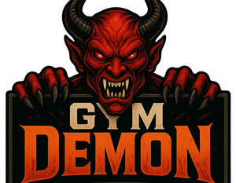

Trade Mark Journal No.2025/039 26 September 2025
UK00004255286 27 August 2025 (5,9,10,16,25,29,30,32,35,41,44,45)

- Class 5
- Creatine; Creatine supplements; Creatine powder; Protein powders; Nootropics; Nootropic supplements; Adaptogenic supplements; Nutraceuticals; Herbal supplements; Electrolyte supplements; Pre-workout supplements; Post-workout supplements; Capsules and tablets for dietary use; Chewable dietary supplements ; Protein supplement shakes; Dietary and nutritional supplements; Dietary food supplements; Dietary supplement drinks; Dietary supplement drink mixes; Dietary supplements; Fitness and endurance supplements; Food supplements; Mineral nutritional supplements; Nutritional drink mix for use as a meal replacement; Nutritional supplement meal replacement bars for boosting energy; Nutritional supplements; Powdered fruit-flavored dietary supplement drink mix; Powdered nutritional supplement drink mix; Powdered nutritional supplement energy drink mix; Protein dietary supplements; Protein powder dietary supplements; Protein supplements; Vitamin and mineral food supplements; Vitamin and mineral supplements; Vitamin drinks; Vitamins and vitamin preparations; Vitamin supplements; Whey protein dietary supplements.
- Class 9
- Downloadable podcasts; Streamable fitness content; Downloadable e-books related to fitness, nutrition, and mental health; Virtual coaching software; Augmented reality and gamified fitness software; Downloadable virtual goods (for use in digital platforms or fitness apps); Mobile apps; Software for mobile phones; Application software for mobile phones; Application software for mobile devices; Mobile application software; Downloadable software applications for mobile phones; Training guides in electronic format; Media content; Recorded content.
- Class 10
- Compression garments.
- Class 16
- Printed packaging inserts; Branded planners or fitness diaries; Printed matter; Printed matter for instructional purposes; Printed promotional material; Posters; Printed brochures; Printed booklets; Printed leaflets; Printed guides; Journals; Training manuals; Printed training materials.
- Class 25
- Headwear, wristbands, and performance accessories; Undergarments for athletes; Clothing; Athletic clothing; Clothing for sports; Sportswear; Ready-to-wear clothing; Sports clothing; Sports garments; Clothes for sports; Jerseys [clothing]; Casual clothing; Leisure clothing; Clothing for leisure wear; Footwear.
- Class 29
- Dairy-based protein snacks; Plant-based protein food products. ; Fruit based snack foods; Nut-based snack foods.
- Class 30
- Supplement-infused confectionery; Supplement-enhanced bakery goods; Functional chewing gum and lozenges; High-protein granola and cereals; Protein Bars; Protein Bars with creatine; Protein Bars with Beta-Alanine; Protein Bars with L-Citrulline; Protein Bars with nootropics; Protein Bars caffeine; Bars based on wheat; Cereal bars; Cereal bars and energy bars; Cereal-based bars; Cereal-based snack bars; Cereal-based snack food; Foods produced from baked cereals; High-protein cereal bars; Maize based snack products; Cereal based energy bars.
- Class 32
- Ready-to-drink pre-workout beverages; Nootropic beverages; BCAA drinks; Vitamin water and hydration boosters; Caffeinated carbonated beverages; Non-alcoholic functional wellness shots ; Carbohydrate drinks; Carbonated non-alcoholic drinks; Energy drinks; Energy drinks containing caffeine; Functional water-based beverages; Isotonic beverages; Isotonic drinks; Isotonic non-alcoholic drinks; Non-alcoholic drinks enriched with vitamins and mineral salts; Protein-enriched sports beverages; Soft drinks; Soft drinks for energy supply; Sports drinks; Sports drinks containing electrolytes; Non-alcoholic beverages; Non-alcoholic drinks.
- Class 35
- Retail services relating to functional foods, snacks, and beverages; Wholesale services for sports nutrition and fitness products; Franchise services in the field of nutrition and fitness ; Online services relating to dietary supplements; Online retail store services in relation to clothing; Online retail store services relating to clothing; Online retail services relating to clothing; Retail services in relation to dietary supplements.
- Class 41
- Hosting of podcasts and live streams related to fitness and mindset; Organising fitness challenges and community events; Providing fitness certification programs; Online non-downloadable videos featuring workouts or guided rituals; Gamified fitness experiences and digital transformation challenges; Arranging and conducting of workshops; Arranging and conducting workshops; Conducting workshops [training]; Education services relating to physical fitness; Health and fitness training; Health and wellness training; Physical fitness education services; Physical health education; Provision of educational health and fitness information; Workshops for educational purposes; Workshops for training purposes; Advice relating to medical training; Health club services [health and fitness training].
- Class 44
- Recovery therapy services (non-medical); Consultancy and advisory services in sleep recovery optimisation; Consultancy and advisory services in relation to medical/therapy; Biohacking and longevity consultancy; Online wellness advisory services; Personalised supplement consultation services; Advisory services relating to nutrition; Consultancy relating to nutrition; Dietary and nutritional advice; Food nutrition consultation; Mental health services; Nutrition and dietetic consultancy; Nutrition consultancy; Nutrition counselling; Nutritional advice; Nutritional advisory services; Nutritional advisory and consultation services; Providing information about dietary supplements and nutrition; Advice relating to nutrition.
- Class 45
- Brand licensing services ; Licensing of trademarks.
Gym Demon Ltd
Representative: Oliver & Co Solicitors Ltd